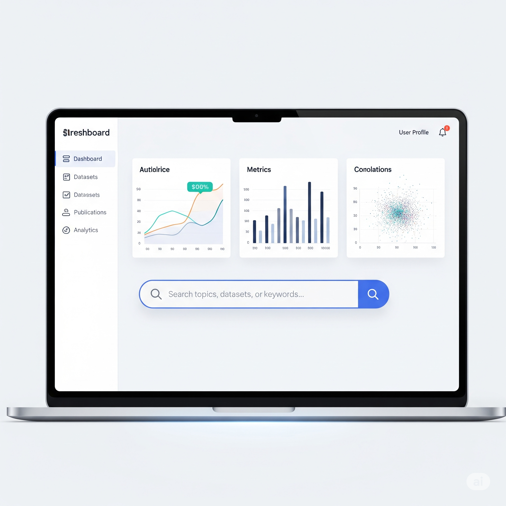
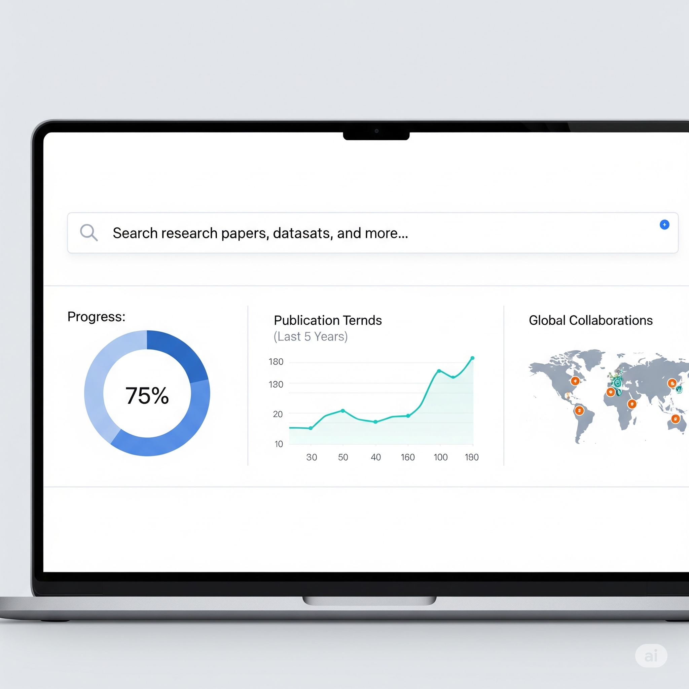

Connecting Curiosity with Discovery.
科学の進歩に、あなたの参加を。誰でも研究に参加できる社会を、あたりまえに。
Our Vision
私たちの目指す世界

すべての知的好奇心が、
未来の発見につながる社会へ。
私たちは、研究が一部の専門家だけのものではなく、すべての人の好奇心から始まるものだと信じています。Researchinは、小さな「知りたい」と誠実な「協力したい」という想いを繋ぐことで、科学技術と社会の発展に貢献するインフラとなることを目指します。
Our Features
Researchinの3つの特徴

01
詳細な検索機能
興味や専門分野に合わせて、豊富な研究プロジェクトを簡単に検索できます。属性や条件で絞り込み、あなたにぴったりの研究を見つけましょう。

02
透明性の高い報酬制度
参加する研究に応じて、明確な謝礼が提供されます。あなたの貢献がきちんと評価される仕組みで、安心して研究に参加できます。

03
研究者との繋がり
研究プロジェクトを通じて、大学や企業の研究者と直接繋がることができます。知的好奇心を満たし、新たな知識や視点を得る貴重な機会です。
Our Services
事業内容
研究参加プラットフォーム
多様な研究プロジェクトの募集情報を一元化。参加者は興味のある研究を簡単に、研究者は効率的に協力者を集められます。
案件アグリゲーション
国内外の主要な研究募集情報をAIが収集・解析し、プラットフォームに集約。常に最新の情報を提供します。
決済・支払い代行
研究協力者への謝礼支払いをスムーズに代行。煩雑な事務手続きを軽減し、研究者は研究活動に専念できます。
Company Profile
会社概要
| 会社名 | Researchin株式会社 |
|---|---|
| 本店所在地 | 東京都渋谷区道玄坂１丁目１０番８号渋谷道玄坂東急ビル２Ｆ－Ｃ |
| 設立 | 2025年08月20日 |
| 代表取締役CEO | 今井崇人 |
| 事業内容 | 研究・調査の参加者募集・管理プラットフォームの企画・開発・運営 |
Contact
ご相談・連携・取材のご依頼は、
以下までお願いします。